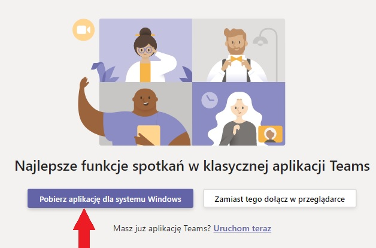
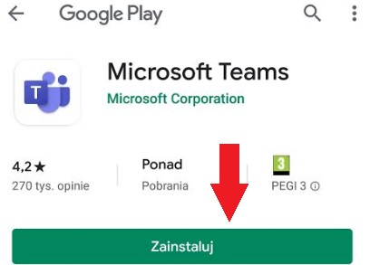
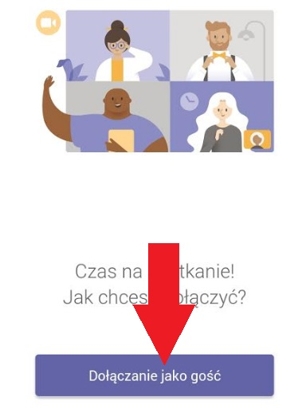
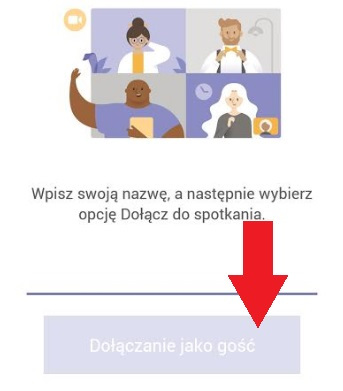
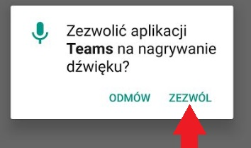
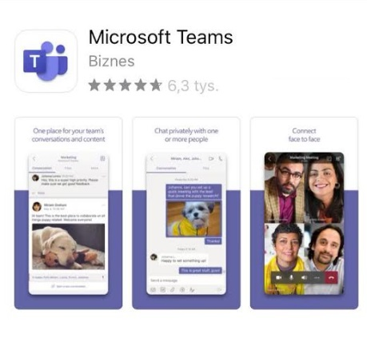
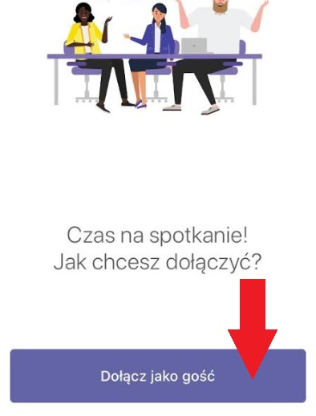
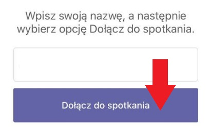
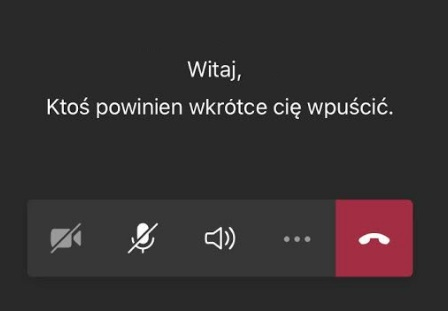

Windows 10
Krok 1
Po kliknięciu w link dołączenia do spotkania zobaczysz strone powitalną platformy Teams. Zapyta ona czy chcesz się połączyć za pomocą przeglądarki czy za pomocą aplikacji. Kliknij przycisk odpowiadajacy za pobranie aplikacji

Krok 2
Uruchom pobrany plik. Aplikacja Teams powinna się automatycznie uruchomić oraz dołączyć cię do naszego webinaru
Krok 3
>Aplikacja poprosi Cię o podanie imienia i nazwiska. Wpisz je w pole wpisz nazwę a następnie kliknij przycisk dołącz teraz
Krok 4
Znajdziesz się w poczekalni naszego webinaru. Jeden z moderatorów wkrótce dołączy Cię do spotkania
Krok 5
Gotowi na webinar? Klinkij przycisk poniżej aby dołączyć
Android
Krok 1
Pobierz aplikację Microsoft Teams ze sklepu Google Play

Krok 2
Po kliknięciu w link dołączenia do spotkania, aplikacja zapyta czy chcesz się zalogować czy dołączyć jako gość. Wybierz opcję dołącz jako gość, wpisz swoje imię i nazwisko a następnie potwierdź to ponownie klikając w przycisk dołącz jako gość


Krok 3
Aplikacja może zapytać Cię o zgodę na wykorzystanie mikrofonu. Jeżeli to nastąpi, zezwól na to

Krok 4
Znajdujesz się w poczekalni naszego webinaru. Jeden z moderatorów wkrótce dołączy Cię do spotkania
Krok 5
Gotowi na webinar? Klinkij przycisk poniżej aby dołączyć
iOS
Krok 1
Pobierz aplikację Microsoft Teams ze sklepu App Store

Krok 2
Po kliknięciu w link dołączenia do spotkania, aplikacja zapyta czy chcesz się zalogować czy dołączyć jako gość. Wybierz opcję dołącz jako gość, wpisz swoje imię i nazwisko a następnie potwierdź to ponownie klikając w przycisk dołącz do spotkania


Krok 3
Aplikacja może zapytać Cię o zgodę na wykorzystanie mikrofonu. Jeżeli to nastąpi, zezwól na to
Krok 4
Znajdziesz się w poczekalni naszego webinaru. Jeden z moderatorów wkrótce dołączy Cię do spotkania

Krok 5
Gotowi na webinar? Klinkij przycisk poniżej aby dołączyć